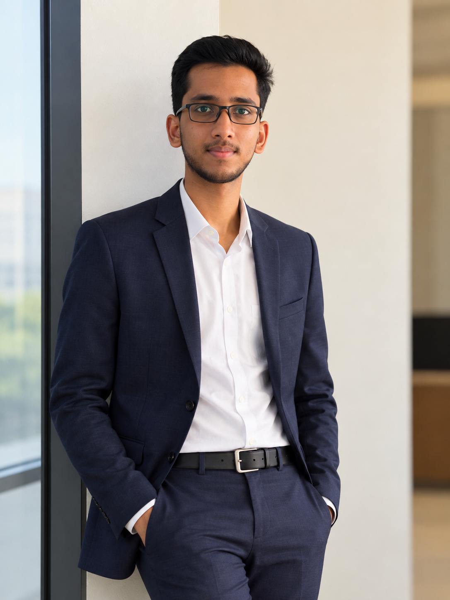

Programming
Python, C, Java fundamentals
M.Tech CSE · Software Development · AI/ML
I'm a Computer Science graduate currently pursuing an M.Tech at Amrita Vishwa Vidyapeetham. I enjoy building Python applications, exploring machine learning, and turning ideas into useful software experiences.

01 / About
A little about my background and what I bring to a team.
My interests sit at the intersection of software development, machine learning, and problem solving. I like understanding how systems work and applying that knowledge to build useful, maintainable applications.
My current focus is strengthening my computer science fundamentals while developing projects that demonstrate practical engineering skills—from web applications to my local AI assistant, Lucky.
02 / Skills
Technologies and fundamentals I've used in coursework and projects.
Python, C, Java fundamentals
HTML, CSS, JavaScript, Bootstrap, WordPress
Python for ML, NumPy, Pandas, model-based applications
Flask, OOP, data structures, algorithms, problem solving
03 / Projects
A selection of applications and experiments I've built. More work is available on GitHub.
A local AI assistant project built around Python and Ollama. The project is evolving through planned releases, beginning with a text-based assistant and expanding toward web chat and voice interaction.
A Flask-based retail analytics application that analyzes historical sales, predicts sales using machine learning, and generates data-driven rack-placement recommendations.
A role-based Flask application with faculty and student dashboards, attendance marking, attendance history, and percentage tracking.
An interactive browser-based Eight Queens puzzle with multiple difficulty levels, built to make a classic constraint problem engaging.
A responsive website created with HTML, CSS, JavaScript, and Bootstrap, applying object-oriented programming concepts.
Initial Python and Ollama assistant.
● PublishedBrowser interface connected to a local API.
In progressSpeech input and spoken responses.
In developmentPlanned improvements after earlier releases.
Planned04 / Experience
TechYuva Computers
OTP Technologies Private Limited
05 / Education
Amrita Vishwa Vidyapeetham
Eluru College of Engineering and Technology, Duggirala · CGPA 8.14
NRI Junior College, Eluru · CGPA 9.10
Sree Sree E.M. High School, Eluru · CGPA 9.20
06 / Certifications
07 / Contact
I'm interested in opportunities to learn, collaborate, and contribute to software development, Python, and applied AI/ML projects.